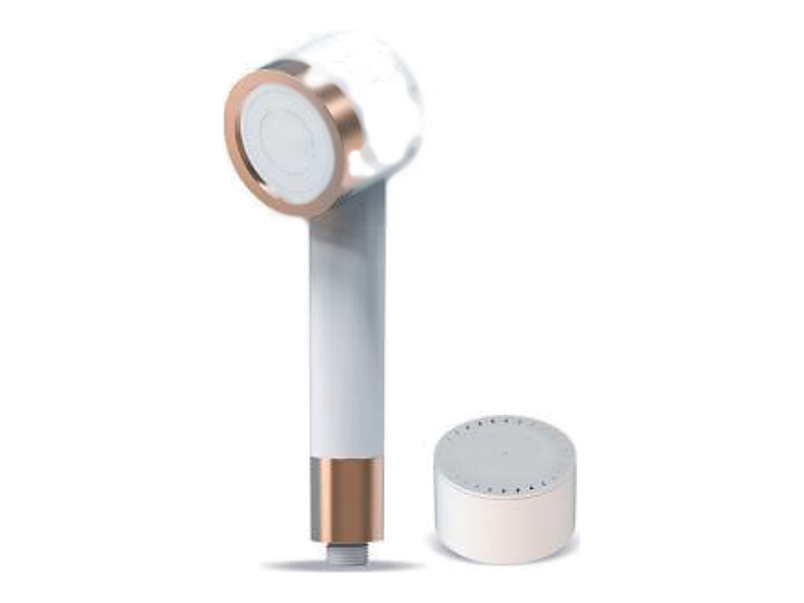

DuchaRP-S01
Filtro de ducha de mano
SKU: RP-S01
MOQ: confirmar al consultar
Inicio/Productos/Filtros de ducha/ RP-S11

Filtros de ducha
Prefiltro de ducha en línea (JK-C4-Q)
RP-S11 — Prefiltro de ducha en línea. Especificación clave: formato prefiltro de ducha en línea. Las especificaciones se confirman por modelo y pedido.
Solicitar presupuesto para RP-S11
El voltaje / la frecuencia se configuran según el país de destino. Otras configuraciones se confirman por pedido.
RP-S11 es un prefiltro de ducha en línea (JK-C4-Q) que se instala en la tubería de agua de la ducha. Tiene conexión G1/2 y cartucho reemplazable, con la configuración del cartucho por pedido. El caudal, la presión y la temperatura, y la vida útil del cartucho y las dimensiones se confirman por pedido.
¿Cuál es la cantidad mínima de pedido?
El primer pedido es de 200 unidades por modelo, y los pedidos repetidos son de 500 unidades.
¿Puedo pedir una muestra antes de un pedido en volumen?
Sí. Las muestras están listas en 15 días y la tarifa de la muestra se reembolsa en su primer pedido en volumen. Los pedidos en volumen tardan 40 días tras la aprobación de la muestra y se envían FOB Shenzhen.
¿Cuánto tarda un pedido en volumen y cómo se envía?
Los pedidos en volumen tardan 40 días tras la aprobación de la muestra y se envían FOB Shenzhen.
5 filas de especificaciones del catálogo de ROPureOEM.
| Formato | Prefiltro de ducha en línea |
|---|---|
| Conexión | G1/2 |
| Cartucho | Reemplazable; configuración por pedido |
| Caudal / presión / temperatura | Confirmado por pedido |
| Vida útil del cartucho / dimensiones | Confirmado por pedido |
Las especificaciones proceden del catálogo de ROPureOEM. Cuando un valor aún no está confirmado, se indica como «Confirmado por pedido» — no publicamos cifras sin confirmar.

DuchaFiltro de ducha de mano
SKU: RP-S01
MOQ: confirmar al consultar
 Ducha
DuchaFiltro de ducha rectangular
SKU: RP-S03
MOQ: confirmar al consultar
 Ducha
DuchaFiltro de ducha multimodo: cuatro modelos
SKU: RP-S07
MOQ: confirmar al consultar
 Ducha
DuchaFiltro de ducha portátil
SKU: RP-S10
MOQ: confirmar al consultar